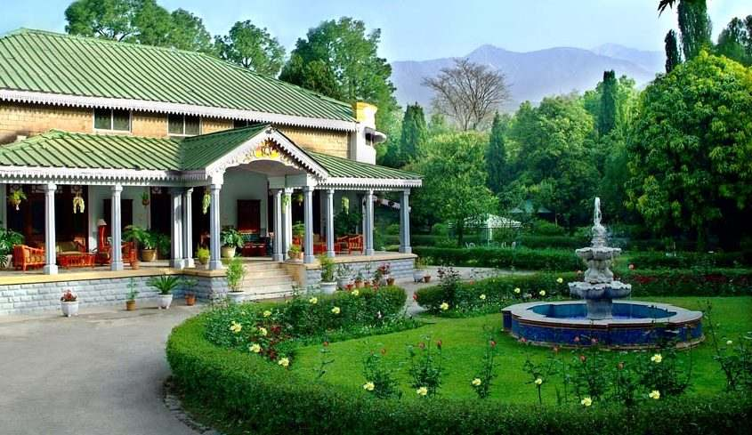
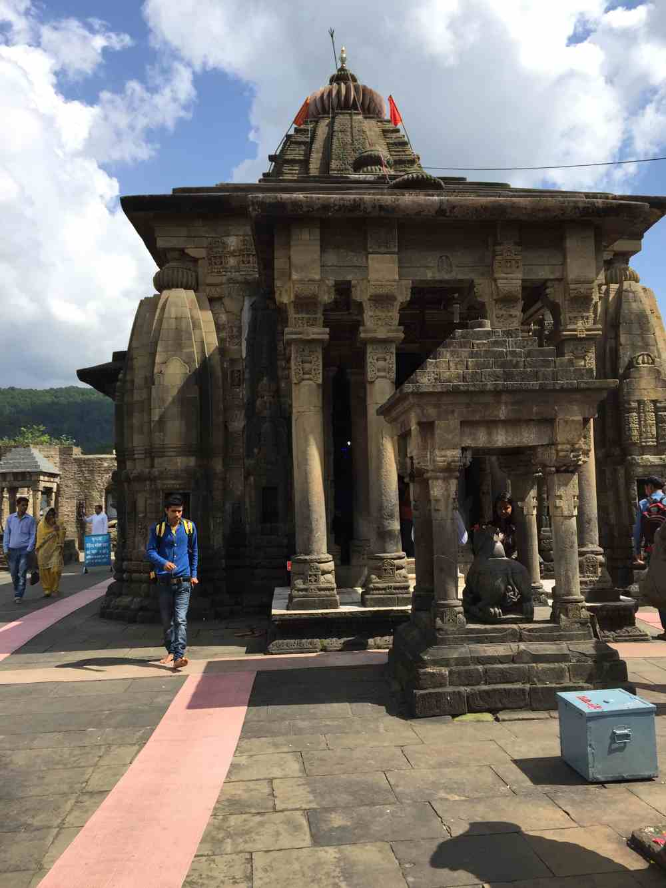
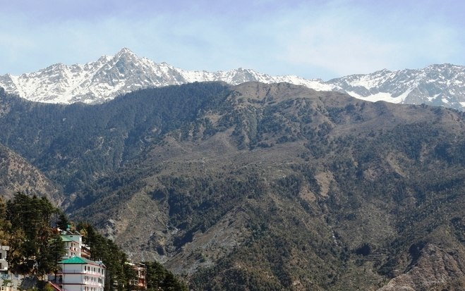
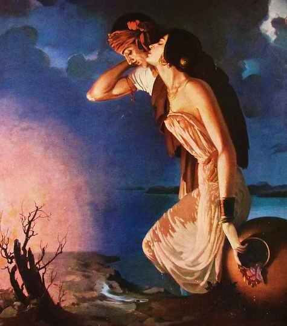
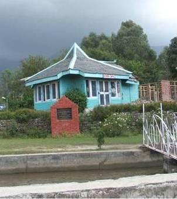
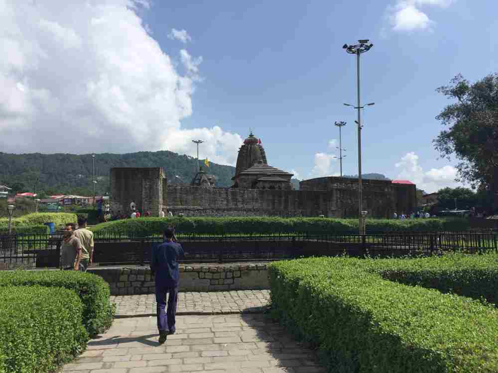

About Palampur
How To Reach
-
 BY AIR:Gaggal Airport at Dharamshala is the closest airport, around 40 Kms from Palampur. The drive is beautiful with the view of lovely tea gardens. Taxis and cabs are easily available from the airport.
BY AIR:Gaggal Airport at Dharamshala is the closest airport, around 40 Kms from Palampur. The drive is beautiful with the view of lovely tea gardens. Taxis and cabs are easily available from the airport. -
 BY BUS:State run buses operated by Himachal Pradesh State Road Transport Corporation (HPSRTC) ply regularly from nearby cities. Delhi to Palampur is around 480 Kms and buses take 8-10 hours to reach.
BY BUS:State run buses operated by Himachal Pradesh State Road Transport Corporation (HPSRTC) ply regularly from nearby cities. Delhi to Palampur is around 480 Kms and buses take 8-10 hours to reach. -
 BY TRAIN:Although Palampur has its own railway station, it not very well connected to other cities. Pathankot is the well-connected closest train station to Palampur, around 120 Kms away. Taxis are available from Pathankot to Palampur easily and the 3-4 hour drive is enchanting. You would not get disappointed with the lovely views the driveway has to offer.
BY TRAIN:Although Palampur has its own railway station, it not very well connected to other cities. Pathankot is the well-connected closest train station to Palampur, around 120 Kms away. Taxis are available from Pathankot to Palampur easily and the 3-4 hour drive is enchanting. You would not get disappointed with the lovely views the driveway has to offer. -
 BY ROAD - OWN VEHICLE:If you’re planning a road trip from Delhi, you could take Delhi-Panipat-Karnal-Ambala route which would lead you straight to Banur Road, after which you can take a right and hit Palampur via Nangal-Kangra-Nagarkota. The drive would be long and hence you could take a few leisurely breaks in between.
BY ROAD - OWN VEHICLE:If you’re planning a road trip from Delhi, you could take Delhi-Panipat-Karnal-Ambala route which would lead you straight to Banur Road, after which you can take a right and hit Palampur via Nangal-Kangra-Nagarkota. The drive would be long and hence you could take a few leisurely breaks in between.
Best Time To Go
-
 BEST TIME TO GO:If you’re a snowfall couple, Palampur could be a small pretty hill station to cherish that. The temperatures in winters (November-February) go down to subzero levels and you could have lovely view of the snowclad Dhauladhar range. Other months are nice to visit too, with temperatures remaining comfortably within 8 degrees to 30 degrees.
BEST TIME TO GO:If you’re a snowfall couple, Palampur could be a small pretty hill station to cherish that. The temperatures in winters (November-February) go down to subzero levels and you could have lovely view of the snowclad Dhauladhar range. Other months are nice to visit too, with temperatures remaining comfortably within 8 degrees to 30 degrees. -
 WEATHER:11-23 degree C
WEATHER:11-23 degree C
Humidity 36%
Long weekend!!! Long Weekend!!! Buzzing around the corridors of our office, me and my husband decided to make a short trip to Palampur, in the lap of Kangra valley in Himachal.
We took a night train from Delhi to Pathankot and reached Pathankot Cantt at 6:30 in the morning. From there we headed to Palampur via taxi. The 4 hour long drive was extremely scenic with tea gardens, green meadows all around, little streams flowing across, pine trees standing tall and Dhauladhar Range enclosing the valley.

We finally we reached our destination Taragarh palace in Palampur. Taragarh palace is beautiful heritage resort in the midst of forest acquired by royal family of Jammu and Kashmir.

Day-1
The day went by pretty much relaxing and catching up with each other after our busy schedules in Delhi. We went for short nature walk in the nearby area. In the evening we went to Kaya-Kalp Naturopathy Center to take a relaxing massage followed by Shirodhara session. The session was extremely rejuvenating for both of us! Must needed relaxation together :)

Day-2
After a heavy breakfast at the resort, we took off to Baijnath Temple. It’s an ancient temple built during the time of Pandavas about 5000 years ago. A small trail downhill leads to a rivulet where devotes usually take a bath before to go the sacred temple. The temple in itself has a very serene atmosphere.


While coming back suddenly we saw a group of paragliders who told us that a world cup tournament for paragliding was going to take place at Bir so they were all practicing. Astounding things happen at all beautiful places around the world! We ended our day with a late evening romantic nature trail around the resort!!! It was lovely spending time together and relaxing the lap of nature.

Day-3
We woke up and saw snow clad mountains shimmering in the sun. We learnt that it had snowed heavily up there on the mountains last night. Locals told us that during winters and spring Dhauladhar Range looks spectacular and are also known as ‘Silver Mountains’. We were lucky to have a glimpse of the same.

Then we headed to Shoba Singh Art Gallery. Shobha Singh is renowned Indian artist highly acclaimed for his painting ‘Sohini Mahiwal’ who spent his life at Andretta, near Palampur. Many of his art pieces have been displayed at his cozy home at Andretta.
 
After lunch, we went to Neugal Cafe’ in Palampur. The café is really known for its food and ambiance. However, it turned out to be a big disappointment. The café was in a really shabby condition and looked dark and dull.
Finally at 4 PM, we headed to Pathankot to catch our train to Delhi. For me the drive back was one of the high points …listening to soft music and gazing at the marvel of nature. It was an absolutely beautiful and a much needed break for us from work and everything else!
-

Baijnath Temple
One of the main attractions around the region, Baijnath temple is around 15 Kms from Palampur. It is an ancient temple dedicated to lord Shiva. It’s not just the temple that’s beautiful but the surroundings too. It has a lovely garden like area with lush green grass shimmering in the winter season. The drive to the temple is also lovely with picturesque views to behold!
-

Tea Gardens
Palampur is called the tea-capital of North India for a reason. It has a wide spread of such gardens could be viewed in and around the hill city. A short stroll through the gardens with a view of snow clad Dhauladhar range in the background could be the highest point of your trip to Palampur. The beauty of the shimmering green blanket of leaves with a few orange trees sprinkled across the area is breathtaking! -
Paplung Sherabling Monastry
It’s a beautiful monastery with 8 stupas with larger than life sized Buddha statues. Around 700 monks stay and study there. The monastery is beautifully made with Tibetan architecture and has a soothing and calming atmosphere. -
Shoba Singh Art Gallery
Shobha Singh is renowned Indian artist highly acclaimed for his painting ‘Sohini Mahiwal’ who spent his life at Andretta, near Palampur. Many of his art pieces have been displayed at his cozy home at Andretta.
{kind=link}
{kind=link}
Beautiful driveway from Pathankot to Palampur
{kind=link}
{kind=link}
Lovely gardens at Taragarh Resort under sweet winter sunlight
Nature Walks at Palampur
{kind=link}
Beautiful Tea gardens at Palampur
The huge Buddha statue at Paplung Sherabling Monastry
-
 Taragarh Heritage Resort, PalampurCost : 7000-9000
Taragarh Heritage Resort, PalampurCost : 7000-9000